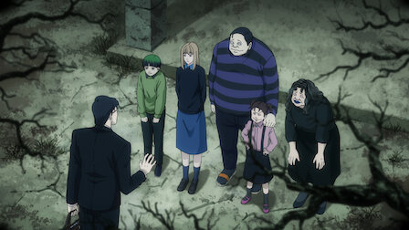

伊藤潤二狂熱：日本恐怖故事
2023 | 年齡分級：16+ | 1 季 | 恐怖動漫
出自恐怖漫畫大師伊藤潤二之手，一系列最古怪、最嚇人、最恐怖的故事絕對教你毛骨悚然。
主演：杉山里穗，岸尾大輔，末柄里惠
營業人名稱：伊藤潤二幫忙推廣股份有限公司
統一編號：50869504
<冨江>由Tibame所製作。
本網站無任何營利行為，為學生課程練習所用。
伊藤潤二狂熱：日本恐怖故事
2023 | 年齡分級：16+ | 1 季 | 恐怖動漫
出自恐怖漫畫大師伊藤潤二之手，一系列最古怪、最嚇人、最恐怖的故事絕對教你毛骨悚然。
主演：杉山里穗，岸尾大輔，末柄里惠

怪異六兄妹對靈異照片特別有興趣的攝影師造訪古怪陰森的大宅，引摺家的六個兄妹就居住在此處。 |
隧道奇譚 / 賣冰淇淋的車子五郎曾看見母親走進一條隧道中，如今他重返舊地。賣冰淇淋的車子來了，開車的小販是個魅力十足的年輕人。 |
人頭氣球超人氣偶像疑似自殺身亡，而後有人開始見到她的巨大頭顱飄浮在天空中，景象怵目驚心。 |
四道牆的房間 / 睡魔的房間弟弟雙一三不五時製造噪音，吵得公一根本無法專心唸書。雄二飽受夢魘所擾，請朋友麻理務必幫他保持清醒。 |
侵入者 / 閣樓的長髮獨居的押切一直在屋子裡聽見奇怪的腳步聲。千惠美自睡夢中驚醒，發現有隻老鼠困在她又黑又長的秀髮中。 |
黴 / 藏書幻影把房子租給呂木老師一年後，赤坂發現黴長得到處都是。香子的丈夫五郎對他自己的藏書抱持瘋狂的執念。 |
墓碑鎮開車撞到一個女孩之後，剛和妹妹薰發現前方的路被無數的墓碑擋住。 |
恐怖的重層 / 漂到岸上的怪物麗美因為意外而失去半張臉，卻發現過去的自己還存在於自己體內。詭異的海中生物漂流到海岸上。 |
富江：照片可怕的轉學生富江不開心，原因是女同學月子大肆拍攝超人氣校草的照片，甚至開價兜售。 |
無盡的迷路 / 壞小孩兩個好朋友在深山裡迷路，遇見一群苦行僧。栗子與一個年紀比她小的男孩玩耍，最後卻開始霸凌他。 |
鬼巷 / 無頭雕刻年輕男子搬進死巷旁的寄宿家庭。喜歡創作無頭雕刻的美術老師慘遭殺害，說巧不巧，他的屍體也沒有頭。 |
耳語女 / 雙一的寵物歇斯底里的女孩什麼事都決定不了，幸好來了個冷靜的神祕女子，專門指示她該怎麼做。雙一家裡領養了一隻寵物貓。 |
日本恐怖漫畫大師伊藤潤二筆下故事改編為動畫！
Netflix 將在 2023 年推出動畫影集《伊藤潤二狂熱：日本恐怖故事》（Junji Ito Maniac: Japanese Tales of the Macabre），以獨具一格的世界觀及風格獵奇的迷人角色打造 20 則驚悚故事。
《伊藤潤二狂熱：日本恐怖故事》以伊藤潤二筆下膾炙人口的作品《伊藤潤二傑作集》、《魔之碎片》、《伊藤潤二研究：來自恐怖深淵》進行改編，以「瘋狂」為共同主題，精選出 20 則精彩故事，包括《人頭氣球》、《富江：照片》、《四道牆的房間》與《侵入者》等，將再次挑戰膽大粉絲的極限。
配音陣容包括「富江」末柄里惠、「泉澤月子」花守由美里、「雙一」三矢雄二、「押切」下野紘。
劇集由田頭忍擔任導演、澤田薰擔任編劇。製片工作為 Studio DEEN。
營業人名稱：伊藤潤二幫忙推廣股份有限公司
統一編號：50869504
<冨江>由Tibame所製作。